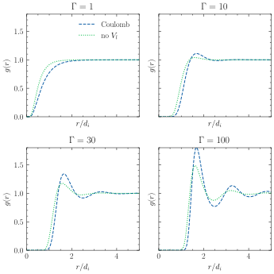
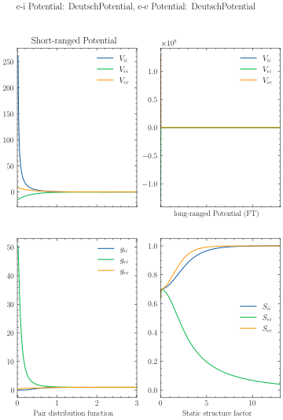
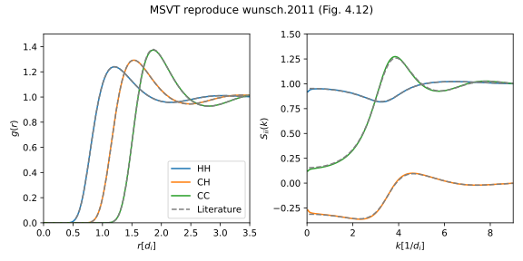
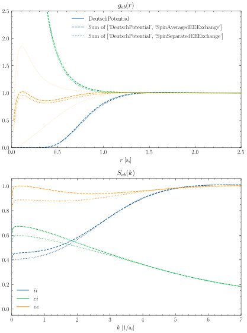

jaxrts.hnc_potentials.CoulombPotential
- class jaxrts.hnc_potentials.CoulombPotential(include_electrons: Literal['off', 'SpinAveraged', 'SpinSeparated'] = 'off')[source]
A full Coulomb Potential.
Methods
T(plasma_state)The mass_weighted temperature average of a pair, according to [Schwarz et al., 2007].
__init__([include_electrons])alpha(plasma_state)check(plasma_state)Test if the HNCPotential is applicable to the PlasmaState.
citation([style, comment])Return bibliographic information for the Model used.
full_k(plasma_state, k)full_r(plasma_state, r)lambda_ab(plasma_state)long_k(plasma_state, k)long_r(plasma_state, r)This is the long-range part of
full_r():mu(plasma_state)The geometric mean of two masses (or reciprocal sum)
prepare(plasma_state, key)q2(plasma_state)This is \(q^2\)!
r_cut(plasma_state)This casts
jaxrts.PlasmaState.ion_core_radiusin the form required to be used with an :py:class:~.HNCPotential`.short_k(plasma_state, k)The Fourier transform of
short_r().short_r(plasma_state, r)This is the short-range part of
full_r():Attributes
A list of keys where this Potential is adequate for.
A list of bibtex keys.
If "SpinAveraged", the electrons are added as the n+1th ion species to the potential.
Examples using
jaxrts.hnc_potentials.CoulombPotential
Showcase of the relavance of including free-bound scattering
Showcase of the relavance of including free-bound scattering
HNC: Pair correlation function for different Γ
HNC: Pair correlation function for different Γ
Static structure factor of the electron-ion system
Static structure factor of the electron-ion system
HNC-SVT: multi-component, multi-temperature (M-SVT)
HNC-SVT: multi-component, multi-temperature (M-SVT)
HNC calculations with Quantum exchange potentials
HNC calculations with Quantum exchange potentials